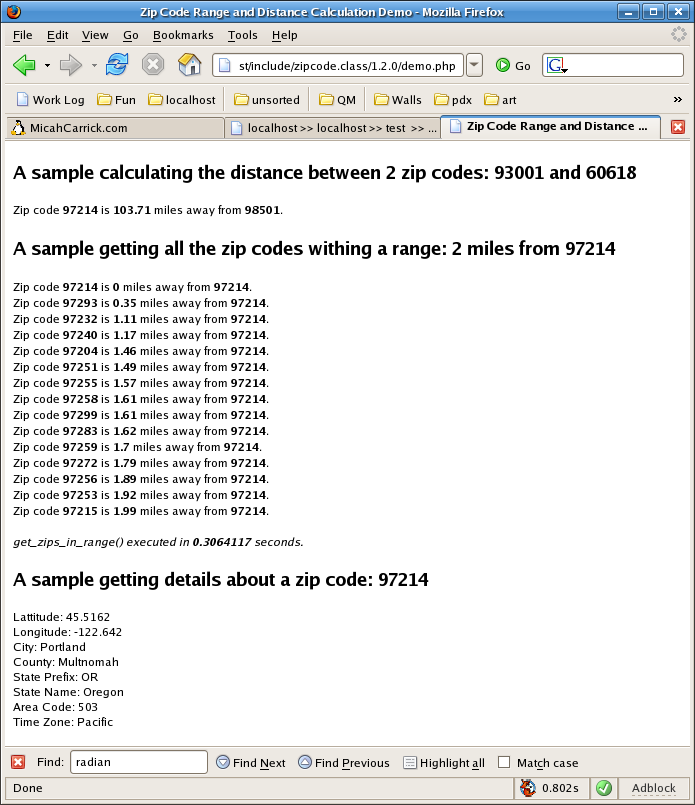

PHP Zip Code Range and Distance Calculation
April 19, 2005
This is a PHP class to do various calculations with zip codes. It's primary purposes are to calculate the distance between two zip codes and to extract all the zip codes that are within a range of a given zip code. All calculations are based on lattitude and longitude coordinates stored in the database. Included is a class file, demonstration file, and the sql files required to create and populate the MySQL tables.
Download:
zipcode-1.2.0.zip
Do you like this code? Rate This Script at Hot Scripts.
If you enjoy this free PHP script and
want to show your support, you can throw me a couple of bucks using
paypal. Any donation, even just a buck, is always appreciated.
Here is a Postgresql port of the zip code database to contributed by max: zip_codes_postgresql.zip.
Version History
- v1.2.0 [Oct 22, 2006] - Using a completely new database based on user contributions which resolves many data bugs. Added sorting to get_zips_in_range(), added ability to include/exclude the base zip from get_zips_in_range()
- v1.1.0 [Apr 30, 2005] - Added Jeff Bearer's code to make it MUCH faster!
- v1.0.1 [Apr 22, 2005] - Fixed a typo :)
- v1.0.0 [Apr 12, 2005] - Initial Version

{kind=link}
Setting up the Database
There are 6 files in the /sql directory which contain SQL statements intended for a MySQL database (though they should work just fine for any SQL database). The zip code database consists of over 40,000 records which would be too large a file for many configurations of phpMyAdmin. Therefore, I have broken the data into records of 10,000 resulting in 5 files. In phpMyAdmin, you can import these 6 files 1 at a time using the 'Import' tab. You MUST import the 'create_table.sql' file first, then each of the data files.
create_table.sql
data_1.sql
data_2.sql
data_3.sql
data_4.sql
data_5.sql
The database has changed since the last version. The data itself is comprised of data from multiple sources starting with the 2000 and 2004 US Census data. Unlike version 1.x of this class, the database is no longer comprised of a state AND zip_code table, but a single zip_code table. Additionally, the table is created with an index on the zip_code column.
The Class: zipcode.class.php
Constants
// constants for setting the $units data member
define('_UNIT_MILES', 'm');
define('_UNIT_KILOMETERS', 'k');
// constants for passing $sort to get_zips_in_range()
define('_ZIPS_SORT_BY_DISTANCE_ASC', 1);
define('_ZIPS_SORT_BY_DISTANCE_DESC', 2);
define('_ZIPS_SORT_BY_ZIP_ASC', 3);
define('_ZIPS_SORT_BY_ZIP_DESC', 4);
// constant for miles to kilometers conversion
define('_M2KM_FACTOR', 1.609344);
Data Members
| decimals | Read/Write. When returning distance values, this variable determines how many decimal places the result should be rounded to. |
| last_error | Read-only. Holds a string value of the last error that occured. This can be used should a method return an error value to get a human readable version of the error. |
| last_time | Read-only. Holds the last method execution time used to debug the efficiency of the get_zips_in_range() method. |
| units | Read/Write. Holds the type of units to show results in. Must be either _UNITS_MILES or _UNITS_KILOMETERS |
Methods
| calculate_mileage($lat1, $lat2, $lon1, $lon2) | Calculates the mileage between the two lattitude/longitude points: $lat1/$lon1 and $lat2/$lon2. |
| chronometer() | Chronometer function from PHP manual used to time execution of get_distance() and get_zips_in_range() methods. |
| get_distance($zip1, $zip2) | Returns the distance between the two zip codes: $zip1 and $zip2. If
there is an error, false is returned. Since the function can return 0
when 2 zips are the same, you must evaluate for an error condition
using:
if (get_distance($zip1, $zip2) === false) // error condition |
| get_zip_details($zip) | Returns the details about the zip code: $zip. Details are in the form of a keyed array. The keys are: latitude, longitude, city, county, state_prefix, state_name, area_code, and time_zone. All are pretty self-explanitory. Returns false on error. |
| get_zip_point($zip) | Gets the lattitude and longitude coordinates of the given zip code as a keyed array. The keys are: lat and lon. Returns false on error. |
| get_zips_in_range($zip, $range, $sort,$include_base) | Finds all zip codes within $range from $zip as a keyed array sorted by $sort. If $include_base is set to true or not specified, then $zip is included in the results. If it is set to false, then $zip is excluded from results. Possible values for $sort are: _ZIPS_SORT_BY_DISTANCE_ASC (default), _ZIPS_SORT_BY_DISTANCE_DESC, _ZIPS_SORT_BY_ZIP_ASC, _ZIPS_SORT_BY_ZIP_DESC. The return value is a keyed array where the key is the zip code and the value is the distance from the base zip $zip. Returns false on error. |
Categories:
Web Development
Copyright © 2004 - 2011 Micah Carrick. All Rights Reserved.
138 Comments about "PHP Zip Code Range and Distance Calculation"
RSS Feed
Here is an updated dataset formatted for the current table. Just use this instead of what is included in the sql folder for updated information.
Any ideas
I have tried this:
if ($key !== 0) echo ', ';
but outputs:
, 99999, 11111, 22222, 33333, etc.
Why is that first comma there that breaks the query?
county, state_name, state_prefix, area_code, time_zone
Those have many reoccurring records. Still, This library is one heck of a time saver! Thanks for the hard work!
http://www.nelsonwells.net/blog/2010/07/07/zip-code-library-in-codeigniter/
http://hnvn.com/demo/zipradius/demo.php
1. Add a column of type Point to the table, initially allow nulls
2.Run the following
UPDATE zip_code SET location = PointFromText(CONCAT('POINT(',lon,' ',lat,')'));
3. edit the table again, remove allow null and add a spatial index.
4. update the get_zips_in_range function as follows:
function get_zips_in_range($zip, $range, $sort=1, $include_base) {
// returns an array of the zip codes within $range of $zip. Returns
// an array with keys as zip codes and values as the distance from
// the zipcode defined in $zip.
$this->chronometer(); // start the clock
$details = $this->get_zip_point($zip); // base zip details
if ($details == false) return false;
// This portion of the routine calculates the minimum and maximum lat and
// long within a given range. This portion of the code was written
// by Jeff Bearer (http://www.jeffbearer.com). This significanly decreases
// the time it takes to execute a query. My demo took 3.2 seconds in
// v1.0.0 and now executes in 0.4 seconds! Greate job Jeff!
// Find Max - Min Lat / Long for Radius and zero point and query
// only zips in that range.
$lat = $details[0];
$lon = $details[1];
$return = array(); // declared here for scope
$first = true;
$radius = $range/69.172;
$boundary = "POLYGON((";
for($i=0; $i <= 360; $i += 360/24)
{
if($first)
{
$first = false;
}
else
{
$boundary .= ', ';
}
$clon = $radius*cos(deg2rad($i)) + $lon;
$clat = $radius*sin(deg2rad($i)) + $lat;
$boundary .= "$clon $clat" ;
}
$boundary .= '))';
$sql = "SELECT zip_code, lat, lon FROM zip_code WHERE MBRContains(GeomFromText('$boundary'), location);";
echo $sql;
$r = mysql_query($sql);
if (!$r) { // sql error
$this->last_error = mysql_error();
return false;
} else {
while ($row = mysql_fetch_row($r)) {
// loop through all 40 some thousand zip codes and determine whether
// or not it's within the specified range.
$dist = $this->calculate_mileage($details[0],$row[1],$details[1],$row[2]);
if ($this->units == _UNIT_KILOMETERS) $dist = $dist * _M2KM_FACTOR;
$return[str_pad($row[0], 5, "0", STR_PAD_LEFT)] = round($dist, $this->decimals);
}
mysql_free_result($r);
}
// sort array
switch($sort)
{
case _ZIPS_SORT_BY_DISTANCE_ASC:
asort($return);
break;
case _ZIPS_SORT_BY_DISTANCE_DESC:
arsort($return);
break;
case _ZIPS_SORT_BY_ZIP_ASC:
ksort($return);
break;
case _ZIPS_SORT_BY_ZIP_DESC:
krsort($return);
break;
}
$this->last_time = $this->chronometer();
if (empty($return)) return false;
return $return;
}
now watchi this thing fly, its rediculously quick.
Steve
This line :
$lon_range = abs($range/(cos($details[0]) * 69.172));
is taking the cos of of the lat coordinate - should it be the lon coordinate ?
Like this:
$lon_range = abs($range/(cos($details[1]) * 69.172));
Most of the time the lon_range is around 1 - in the case of zip code 49017 the range is 35 which is clearly not right!
Any help/suggestions would be great!
Thanks
-Rob
Yes, there are some problems with this script. I don't have time to look into your specific issue, but, I know there have been some gaps and issues with the data in the past (it was a free database that's over 10 years old).
I have started writing a new set of PHP5 classes for zip code ranging where the math is in the MySQL query rather than the PHP. It's much faster but there are still some data issues. I'm hoping that I can find a way to get another free database built out of this years census data.
Can anyone else help Rob with his specific issue?
Take for example zip code 49017
Battle Creek MI
If I look for zips within 50 miles of that zip code - I get over 4600 rows returned.
It seems to do w/ an issue of how it calculates the min lon number
Here is what I get when I do 50 miles of that zip :
SELECT * FROM zip_code WHERE lat BETWEEN '41.6683' AND '43.1139' AND lon BETWEEN '-120.6308' AND '-49.7624'
That -120.6308 is just not correct.
Any help would be appreciated.
Thanks
Aman
Thanks!
99354 & 23533
Is there an updated list?
define the variable in your php function or code
$city = $zip($city)
Drew
Anybody found a free source of Canadian postal codes yet?
Thank you for this script Micah saved me hours of time!!
distance from a city not specific zipcode. I need the database of Us cities longitude and latitude and I couldn't find it.
I will apprecite if anybody give me a clue.
Thanks
I need to be able to lookup a "city name, state" and get a zip code that corresponds to that location. Typical lookup on google returns a list of zip codes but even jus the first one would suffice. I have been searching the internet for a while now and can't find a usefull script that does that .
I ran into a couple of bugs here and there, nothing major that I wasnt able to fix myself. But the only thing that really is holding me back from being able to use this is database updates. Theres a bunch of new zipcodes in the USPS and those need to also be included. Its not something I can really expect Micah to try to keep up on his own, so if ANYONE has a link to an up to date database that can be imported into MySql, I think it would be beneficial to everyone.
Can someone help me on using the get_distance method. I would like to use it by entering only on zipcode in the the html form, and the second zip code would come from an array of zipccodes. This array of zip codes is the answer from the get_zips_in_range(); method. That is, the user inputs the a zip code and the distance in miles, and the result would be the range of zip codes within that distance as well as the distance from each zip code in from get_zips_in_range() to the zip code the user entered.
In other words, how can I use the get_distance method with the latitude, longitude from the database, a range of zip codes from the get_zips_in_range method, a zip code entered by the user, and the distance entered by the user as well.
Thanks.
Where is first starts:
$details = $this->get_zip_point($zip); // base zip details
if ($details == false) {
$this->last_error = "There is no Zip!";
return false;
}
And then at the end to see if the $return array is empty:
if (empty($return)) {
$this->last_error = "The Array is Empty!";
return false;
}
return $return;
When I reload demo.php, the "The Array is Empty!" error pops up now instead of it being blank. Why would $return be empty? I've tried a range of 100 miles. I've even tried hard wiring the zip code and the range into the equations. Any suggestions?
I need to be able to find the distance using a search with a dropdown box saying say Bricklayer, Builder, Plumber etc and the user inputs there postcode. this will give the result of there nearest trade..
If someone helps I will be very greatfull..
Thanks
Robert
I have implemented with both UK and US sites...
I have also extended the script (as per some of the comments above) to use google to update the information on the fly as searches are performed. This gives me the best of both worlds...
Fast local Data, No need to update...
I will like to know if you can customize the script to enable a search of a place, say, Archdale South Carolina USA, and then do an advance search within the results displayed to further search for nearby places in the database say 5 miles around Archdale South Carolina USA search results...that is search with a search result. If you can, I will like to make a sizeable donation. Thank you.
Obinna
Dears i have implement this script to my website but my requirement is that i want to find zip codes between two ranges of miles distance mean let say distance between 10 to 20 miles.
The current script is working for only one distance range.
How i can do it help me please.
I am waiting for your response.
It is a great script and nice effort by the developer.
if anyone know, please let me know.
thanks.
$miles = $z->get_distance($zip1, $zip2)
echo 'Company: '.$row['mycompany'].' is '. $miles .' away from '.$zip1.'';
BTW
This saved me days
Sincerly,
Stephanie :P
Party time.
Fatal error: Cannot use object of type stdClass as array in /home/content/m/l/a/mlamberth/html/drupal/sites/all/modules/homeform/zipcode.class.php on line 176
Line 176 is this:
$lon_range = abs($range/(cos($details[0]) * 69.172));
I have very little OO experience and I'm using php 5. Any ideas?
When I was trying to run get_zips_in_range(); with a 50 mile radius in a dense metropolitan are (take Houston's 77008 for instance) it fails to come back with an array. Actually, the largest radius I could get with 77008 is 11 miles.
I'm working on figuring out the problem and a possible solution, but if anyone has run into this before, I'd love for a little hint or two on getting this functional!
Thanks!
Thanks and when I get some cash I'll send you a fat donation.
I'm trying to do a select based on the zip codes that are returned, however, the $key variable is changed every time the value is returned and ends up being only the last value returned. Is there a way to stick this into an array so I can read all the values and do a select based upon all values? For example:
1. user enters a zip code and distance and submits (have this working)
2. user is returned all zip codes in range
3. SELECT * from Table WHERE $clientlocation = $anyzipreturned
Thanks!
James
With the MySQL only way, you take an initial performance hit due to the query not being cached yet. The first time averages about 0.400 seconds. Whereas the initial query the PHP way is only about 0.100 seconds.
However, once the query is cached (for newbies, MySQL does this automatically) the MySQL only way is slightly faster than the PHP calculation, ~0.0007 sec and ~0.0009 respectively. BTW, changing the zipcode or range results in a new uncached query.
Since the MySQL only way is also more accurate than the PHP+MySQL way, I'd say go with the MySQL only way.
Note: Benchmarks performed with PHP Version 5.2.4 and MySQL version 5.0.51a on a minimal load server. Performance may be different on a high load server.
Thanks a bunch for this great app.Just left you a donation.
Michael
How do I implement this program? I'm attempting to calculate distances from each line of my spreadsheet. I currently have about 6,600 addresses so therefore would like to obtain 1 match for each unit, roughly 45.6 million outputs to rank by distance. Or I can do a smaller data load, by state or such?
Do you have any suggestions?
Thanks
You should be able to do the first by simply looking in a 25 mile radius.
The second would be to pull a query which would be NOT IN the first query.
In other words pull a query on the 50 mile radius and then remove from that list anything less than 25 miles, by having the query NOT IN a 25 mile query.
My requirement as below
e.g. I have post CH64 and i want to find the postcodes within 10miles from CH64 (redius).
Is it possible with one formula?
SELECT id, ( 3959 * acos( cos( radians( $latitude ) ) * cos( radians( lat ) ) * cos( radians( lon ) - radians( $longitude ) ) + sin( radians( $latitude ) ) * sin( radians( lat ) ) ) ) AS distance
FROM zip_code
HAVING distance (less than symbol) 25
ORDER BY distance
LIMIT 0 , 20;
$latitude= 45.1539;
$longitude= -93.1425;
SELECT id, ( 3959 * acos( cos( radians( $latitude ) ) * cos( radians( lat ) ) * cos( radians( lon ) - radians( $longitude ) ) + sin( radians( $latitude ) ) * sin( radians( lat ) ) ) ) AS distance
FROM zip_code
HAVING distance
I need to know if there is a newer database, how often I need to update and from where can I obtain such update.
Thanks in advance.
Thanks once again
This script is excellent and wanted to let you know how much I appreciate your efforts. One day when I am capable of writing sound classes I hope to give back to the coding community as well - pay it forward!
create index lat_idx on zip_code(lat);
create index lon_idx on zip_code(lon);
Could you explain your sql query and what exactly it replaces and/or how to use it? Does it do the range calculation, the distance calculation or both? What are the constants 3959, 37 and -122?
Here is the complete code:
require_once('zipcode.class.php');("phpsqlsearch_dbinfo.php");
require_once('zipcode.class.php');("zipcode.class.php");
$outstanding = echo "$zip1 is $miles miles from $zip2";
function calculate() {
$z = new zipcode_class;
$miles = $z->get_distance($zip1, $zip2);
}
{
if ($miles === false) echo 'Error: '.$z->last_error;
else $outstanding
}
Your Zipcode:
Supply Zipcode:
Mysql will do this type of search for you directly.
SELECT id, ( 3959 * acos( cos( radians(37) ) * cos( radians( lat ) ) * cos( radians( lon ) - radians(-122) ) + sin( radians(37) ) * sin( radians( lat ) ) ) ) AS distance FROM city_location HAVING distance
// This function pulls just the lattitude and longitude from the
// database for a given zip code.
$sql = "SELECT lat, lon from city_location WHERE zip_code ='$zip' limit 1";
Added the Limit 1 to this sql statement this prevents mysql from continue to search for more like it when we only needed one set of lat and lon from the db for another function.
Slight speed increase.
Thanks again for the great script.
Here is the trade....I have a real large database....30 million records...and i want to split it into 999 exact databases, based on the first 3 digits of the zip code. Now i can split servers, backups alot easier with smaler databases.
Seems that the easiest way would be a fast zip code module, that calculates, and searches multiple databases based on the result. By using 3 digits, it really would only search 2 or 3.
Just for the record....we own these files....they were not scarfed somewhere. We bought 20 databases, and did a compare, then a manual lookup.
I really need the help with this.
Not sure where to go from here.
Thanks to Chad (2 posts before mine) i was getting an error before i added:
$z = new zipcode_class;
That fixed everything!
Also, does anyone have any suggestions about making this compatible with Mexican Postal codes? I'd like someone to be able to do a search for a Texas ZIP, that would also return results from Mexican postal codes (which follow the same 5 digit convention as US ZIP codes)
Zip Code Range and Distance Calculation Demo
BODY, P { font-family: sans-serif; font-size: 9pt; }
H3 { font-family: sans-serif; font-size: 14pt; }
Sacramento, CA
Colorado Springs, CO
Denver, CO
Berlin, CT
Jacksonville, FL
Orlando, FL
Atlanta, GA
Boise, ID
Central Chicago, IL
Chicago, IL
Elgin, IL
Woodridge, IL
Indianapolis, IN
Merrillville, IN
Baltimore, MD
Frederick, MD
Washington DC, MD
Detroit, MI
Grand Rapids, MI
Southgate, MI
Westland, MI
Minneapolis, MN
Springfield, MO
St. Louis, MO
Albany, NY
Buffalo, NY
Long Island, NY
Niagara Falls, NY
Syracuse, NY
Charlotte, NC
Greensboro, NC
Akron, OH
Canton, OH
Cincinnati, OH
Columbus, OH
E. Cleveland, OH
Mentor, OH
W. Cleveland, OH
Portland, OR
Philadelphia, PA
Pittsburgh, PA
Greer, SC
Rapid City, SD
Knoxville, TN
Nashville, TN
Arlington, TX
Ogden, UT
Provo, UT
Salt Lake City, UT
Newport News, VA
N. Virginia, VA
Seattle, WA
Spokane, WA
Milwaukee, WI
Enter your zip code
function calculate() {
$z = new zipcode_class;
$miles = $z->get_distance($value, &zip);
}
{
if ($miles === false) echo 'Error: '.$z->last_error;
else echo "Zip code <b>value</b> is <b>$miles</b> miles away from <b>&zip</b>.";
}
I tried using a for loop within a for loop to no avail.
If I am able to do this, then the proximity search and details about each are accomplished all in one shot.
I am, of course, planning on modifying the script to suit my needs, but if I could figure a way to pull the details of each while going through the proximity search, that would be great!
As the routine is designed, the results from a MySQL query is returned as Zip Code, Latitude, and Longitude. If you geocode every address in the club database with a latitude and longitude, you simply point the routine to search the club table rather than the zip code table and return the club numbers based upon the latitude/longitude results. The initial geocoding can be done through Google Maps API.
So, for find-a-club, the programming steps are:
1. Get the address and range of seach (I limit mine to 99 miles).
2. Parse the address through Google Maps to return the latitude and longitude.
3. Plug in the latitude and longitude into a modified version if Micah's routine to retrieve the club numbers and mileage.
4. Take the club numbers and pull up the results.
Thanks, Micah!
Btw, Google has posted a tutorial on how to create a store finder using their map API...maybe this helps someone here: http://code.google.com/support/bin/answer.py?answer=87134&topic=&ctx=sibling
-Mark
I've integrated your code into my site.. http://www.SpeedyWord.com/
I've converted the SQL so that it works for PostgreSQL, Drop me a line if you want me to ZIP the SQL files and email them to you.
Max
} elseif (mysql_num_rows($r)==0) {
not:
} elseif (!$row) {
Because $row can't be set until the else section, so it's always going to fail in the elseif check.
Also, similarly to sam sen's problem, I still haven't figured out an efficient way to search for the zips in the master zip_code table (to get lat/long and zips in range), then marry that data with a store location table's zip codes -- and still sort by the mileage. I can build an SQL statement on the fly with the initial returned range like "select * from stores where zip IN ('12345', '12321', '12333', '12367')", then display the result and miles with something like:
while ($row = mysql_fetch_array($stores_query))
{
echo $row[store_name] .' - '. echo $zips[$row['store_zip']] .' miles away';
}
Adding an "order by" won't really help because if someone searches for '12317', but '12314' and '12315' are in range, ordering by zip will display the other zips before the one the user actually searched for.
It probably would work with a subselect (customizing queries in the class file) but I'm NOT working with mysql 4.1 -- so I can't test this. Anyone that has a solution, please post. I'd appreciate some ideas.
This is some awesome code and I've found it really useful for a project I've been working on recently. However, I found a bug in the get_zips_in_range function that's going to throw off the accuracy of the results. Your code uses:
$lat_range = $range/69.172;
$lon_range = abs($range/(cos($details[0]) * 69.172));
I was doing the math to make sure things seemed fine, as I wanted to wrap my head around the calculations. Everything seemed fine until I hit the cosine in the $lon_range calculation - PHP's cos() function expects a value in radians, but it's receiving a value in degrees. The other functions use the deg2rad() function to correct this, but not here. I just wanted to let you know since it can produce results that include either a pretty accurate longitude range or something wildly inaccurate due to the cyclical nature of cosine. Just wrap $details[0] in deg2rad() and the problem goes away, as far as I can tell.
I confirmed things with this snippet:
$range = 5;
echo 'With deg2rad: ';
for ($lat = -89; $lat ";
}
echo 'With<b>out</b> deg2rad:';
for ($lat = -89; $lat ";
}
You can see that without the deg2rad function, the longitude range doesn't change if you increase the latitude by 2pi degrees, which is of course a full wave of cosine in radians. Switch the 2*M_PI to 5 or something just to show how it bounces all over the place w/out deg2rad but goes from narrow to wide to narrow ranges with.
I know I wouldn't have gotten where I had without finding your code, so thanks a ton for offering it up. I'd feel bad not giving back a bit, and expect a donation once the site is up and running :)
Regards,
Eric
http://www.socialengine.net
Zip1
above is my form code, when i hit submit it should pass zip1 to the method below
echo 'A sample getting all the zip codes withing a range: 2 miles from '.$_POST['zip1'].'';
$zips = $z->get_zips_in_range('zip1', 2, _ZIPS_SORT_BY_DISTANCE_ASC, true);
if ($zips === false) echo 'Error: '.$z->last_error;
else {
foreach ($zips as $key => $value) {
echo "Zip code <b>$key</b> is <b>$value</b> miles away from <b>".$_POST['zip1']"</b>.";
}
is this correct?
cheers
nate
$zips=$z->get_zips_in_range($zip, $range, $sort, $include_base) where $zip is a var from your
html form
so your form should look something like this:
i too am trying to get the closest location from the var $zip from the input of the form...
i guess u need to input range as well, or predefine somehow
hoep this helps i am noob lol 8^p
Can some one please show me how I can include this in a simple form to calculat distance between two zip codes, thanks.
Moody
As for sources of free zip codes that are up to date, see http://geocoder.ibegin.com/downloads.php . You may need to apply PHP string fuctions so that it isn't all caps. Not aware of a source for Canada ZIP codes that are FREE.
Thanks,
Rich
Could anyone please suggest me how to set up a similar database for Italian ZIP (CAP) codes?
Thank you!
Bye bye
Davide
If you can just briefly look at the code (it's not long) and give me some advice, I would appreciate it. I am not asking you to rewrite it for me, just some tips or advice so i can figure out where to go from here.
http://forums.devshed.com/php-development-5/need-to-sort-output-by-distance-481694.html
Thank you for your help... you were right about one thing... 0 rows were being returned... but not because of any problems with SQL or coding... there were simply none in a 2 mile range!
If you add the following to the code in get_zips_in_range then it will let you know there were 0 in range:
if (!$r) { // sql error
$this->last_error = mysql_error();
return false;
} elseif (mysql_num_rows($r)==0) {
$this->last_error = "There were 0 zips within range";
} else {
Thanks for all your help... and i'll say it again, great script!
Looking at it very quickly, I think maybe 0 rows are returned? Try changing the get_zip_point() method from this:
if (!$r) {
$this->last_error = mysql_error();
return false;
} else {
$row = mysql_fetch_array($r);
mysql_free_result($r);
return $row;
}
to this:
if (!$r) {
$this->last_error = mysql_error();
return false;
} elseif (!$row) {
$this->last_error = "Zip code $zip was not found in the database.";
return false;
} else {
$row = mysql_fetch_array($r);
mysql_free_result($r);
return $row;
}
Sorry, I should have said that already have a database full of UK postcodes along with latitudes and longitudes. In fact with no changes your class calculates the distance between postcodes fine... however it errors when trying to find those codes within a radius.
In order to get it to work as far as i have, i simply took your demo.php file and changed the static zip_codes for postcodes in my DB. So literally with only changing those i have the first part working, i just can't see why the codes within a range isn't. All it comes up with is "Error:" but no actual error message.
Any help you could give would be most appreciated. My first thoughts were that you might be performing some kind of validation on the zip_codes, in which case postcodes would fail... but as the distance between codes works i can't see how this would be the case. Below is an entry from my DB:
postcode x y lattitude longitude
AB10 392900 804900 57.135 -2.117
I have obviously changed the SQL to match my tables. The X and Y values aren't used at all... they just came with the data.
Thanks for your help
i tried working with the get_zips_in_range.....
get_zips_in_range(''.$_GET['zip'].'', $_GET['miles'], _ZIPS_SORT_BY_DISTANCE_ASC, true);
{
foreach ($zips as $key => $value) {
echo "<b>$key</b> is <b>$value</b> miles away</b>.";
}
}
?>
And
get_zip_details('$zips');
if ($details === false) echo 'Error: '.$z->last_error;
else {
foreach ($details as $key => $value) {
$key = str_replace('_',' ',$key);
$key = ucwords($key);
echo "$key: $value";
}
}
?>
and ideas (basically trying to do a store locator off of your script
Is there anything special that needs to be done to the script to make it work for English postcodes?
The format of a typical english postcode is either AB10 1XL or AB1 1XL.
Great script BTW... if I can get it working for England it will ahve saved me a HUGE amount of time ;)
Matt
Leave a Comment about "PHP Zip Code Range and Distance Calculation"